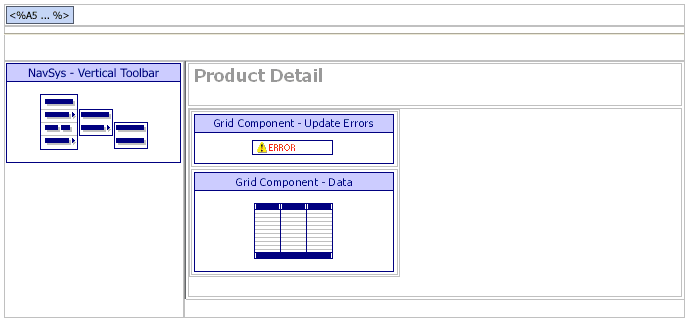
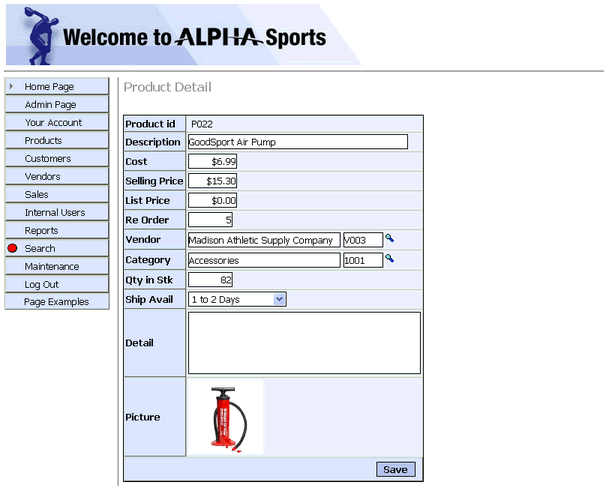

ASWPRODONE.A5W
Purpose
The application administrator uses the ASWPRODONE.A5W page to view or edit a product record.
Description
The ASWPRODONE.A5W page receives a filter expression in the calling URL that opens the page on a selected product record.
This page includes an override of the static contents of the Ship Avail drop down list. The expression that generates the list also establishes the sort order for the list's values.
ASWPRODONE.A5W contains the NAV_INT navigation and GRD_PRODDET grid components.
Links
The Sales > Sales History entry of the NAV_INT navigation component displays the ASWSALESHIST.A5W page. The Description link on the Sales by Quantity tab displays the ASWPRODONE.A5W page.

ASWPRODONE.A5W in the WYSIWYG tab of the HTML Editor

ASWPRODONE.A5W in the Browser
Edits to the Page Source
When you look at ASWPRODONE.A5W with the Source tab of the HTML Editor, you will see a large amount of HTML and Xbasic code. The HTML Editor placed almost all of it there automatically, as we used the WYSIWYG tab to place the tables, text, graphics, and components on the page. There are a few interesting exceptions, where we changed the page code through the Source tab.
The TABLE.EXTERNAL_RECORD_CONTENT_GET() method returns a list of product availability time windows into the dropavail variable.
|
dropavail = table.external_record_content_get("PathAlias.ADB_Path\lk_avail", "alltrim(Ship_Avail)", "Ship_ord") |
The following code overrides the properties of the grid to display the dropavail list in the choices displayed in the Ship Avail list of the GRD_PRODDET grid component.
|
with tmpl_GRD_PRODDET with field_info16 .DropdownBox.Choices = dropavail end with componentName = "GRD_PRODDET" end with |
The A5W_INCLUDE() statement is in the top row of the table. It loads TOPPAGE.A5W and displays a standard page header.
|
<body> <p> <table cellSpacing=0 cellPadding=0 width="800" border=0> <tr> <td colspan="2"> <%a5 a5w_include("toppage.a5w") %> </td> </tr> |
Page Security Information
Login Required
Groups Allowed > Accounting, Administrators, Clerical, Marketing
See Also